<div class="d-flex justify-content-center">
  @if (noPageImg === "dev") {
    
  }
  @else {
    
  }
</div>
<div class="d-flex justify-content-center">
  <button
    type="button"
    class="btn shadow-1 btn-sm"
    style="background-color: #333f54; color: white"
    (click)="BacktoLogin()"
  >
    Back to login
  </button>
</div>
